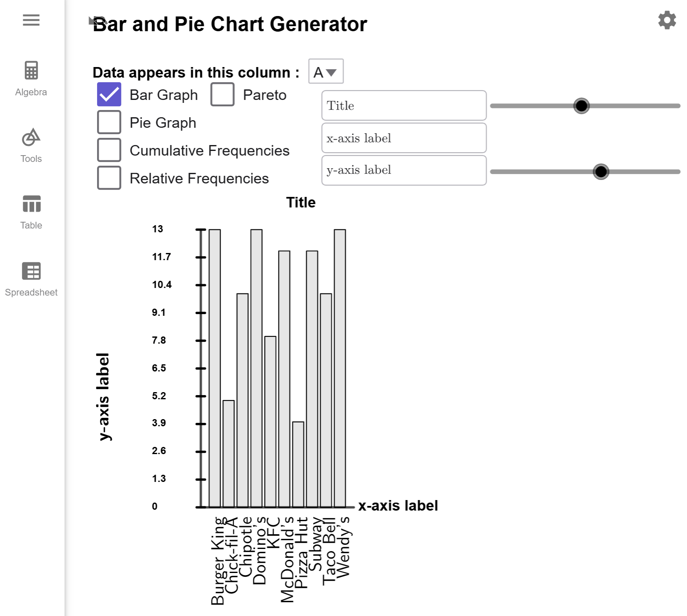
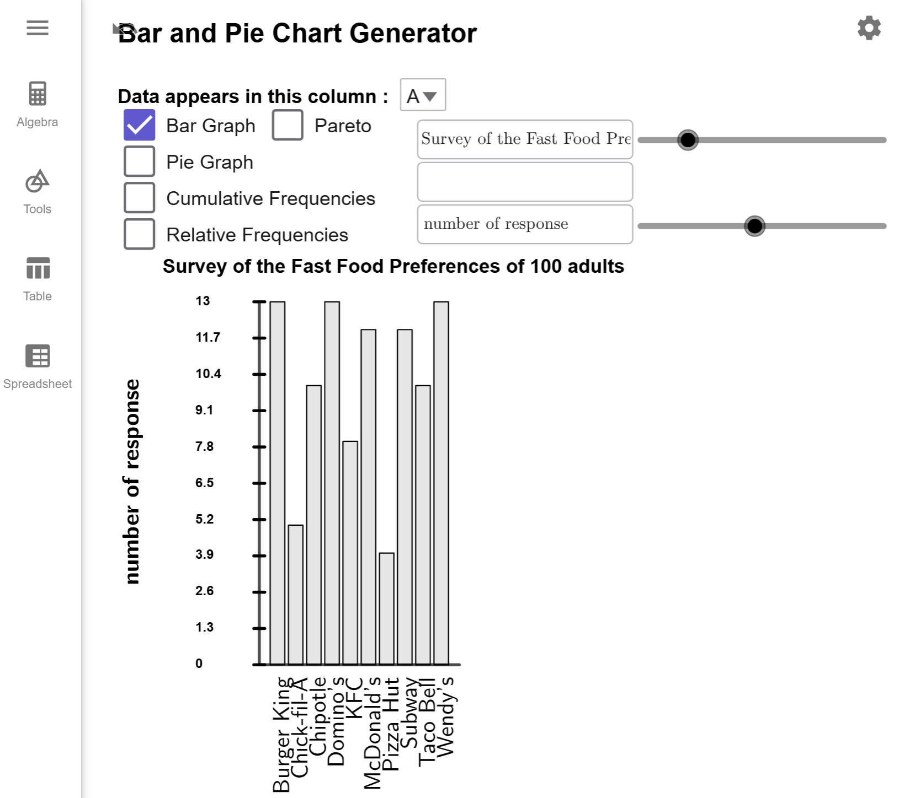
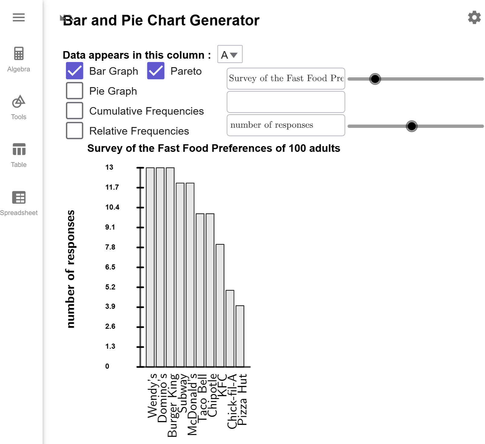

Constructing Bar Graphs
A bar graph uses proportional vertical or horizontal bars to represent the frequency of categorical data. This allows for the quick comparison of different categories of data. A common variation of a bar graph is the Pareto graph, which sorts the bars from tallest to shortest.
Bar Graphs
Bar graphs are a powerful tool to visually compare categories of data. To understand how they work, let us explore an example that demonstrates the process of creating a bar graph using our Bar and Pie Chart Generator Tool.
A survey of 100 people was conducted to determine their favorite fast food restaurant among
various national brands. The results are summarized in the table below. Using the data, create a
bar graph to represent the distribution of responses.
| Response from Survey | |||||||
|---|---|---|---|---|---|---|---|
| Chick-fil-A | McDonald's | Domino's | Taco Bell | McDonald's | McDonald's | McDonald's | Chick-fil-A |
| Wendy's | Burger King | Burger King | Domino's | McDonald's | Subway | Subway | KFC |
| KFC | Domino's | Chipotle | Domino's | Chipotle | Domino's | Taco Bell | Wendy's |
| Chipotle | Burger King | Pizza Hut | Wendy's | Taco Bell | Domino's | KFC | Domino's |
| Chipotle | Burger King | Chipotle | Wendy's | Domino's | KFC | Domino's | KFC |
| Subway | Chipotle | Burger King | Subway | Wendy's | Burger King | KFC | Wendy's |
| McDonald's | Chick-fil-A | McDonald's | Chick-fil-A | Subway | Domino's | Wendy's | Subway |
| Burger King | McDonald's | Burger King | McDonald's | Burger King | Burger King | Subway | Wendy's |
| Pizza Hut | Taco Bell | Burger King | Taco Bell | Chipotle | Pizza Hut | Wendy's | KFC |
| Subway | Subway | KFC | Taco Bell | Chick-fil-A | Subway | Subway | Chipotle |
| Taco Bell | Domino's | Chipotle | Chipotle | Burger King | Wendy's | Wendy's | Taco Bell |
| Wendy's | McDonald's | Pizza Hut | Wendy's | McDonald's | Taco Bell | Burger King | Subway |
| Domino's | Taco Bell | Domino's | McDonald's | ||||
Solution
Copy the data to the clipboard, and load it into the Bar and Pie Chart Generator Tool. The tool should automatically generate the bar graph by default since the data is located in column A. If you load a data set where your information is not in A, you will have to change the drop box to the appropriate column.

Just add in your title and labels, and you are done. I left the \(x-axis\) label blank in my example since it is clear all the bars are food food restaurants.

Note
For this tool, I have enabled pan and zoom since labels on the \(x\)-axis can be bunched together and hard to read. This is something I plan to fix in the future. For now, you can use your mouse, touch pad, or fingers to change the size of the graph.
$$\tag*{\(\blacksquare\)}$$
Pareto Graphs
While standard bar graphs are effective at showcasing categorical data, there are scenarios where sorting the bars in descending order provides greater clarity. This leads us to a specialized variation of the bar graph known as the Pareto graph. Let's modify so that all the bars are sorted from largest to smallest..
Example 2
Create a Pareto graph of the preferred fast food restaurants from .
Solution
Notice there is a checkbox next to Bar Graph Checkbox that says Pareto. Click on this box, and it will sort the bars for you.

Notice that is is now easier to see that, in this sample, the most popular restaurants are Wendy's, Domino's,a nd Burger King, and the least popular are KFC, Chick-fil-A, and Pizza Hunt.
$$\tag*{\(\blacksquare\)}$$